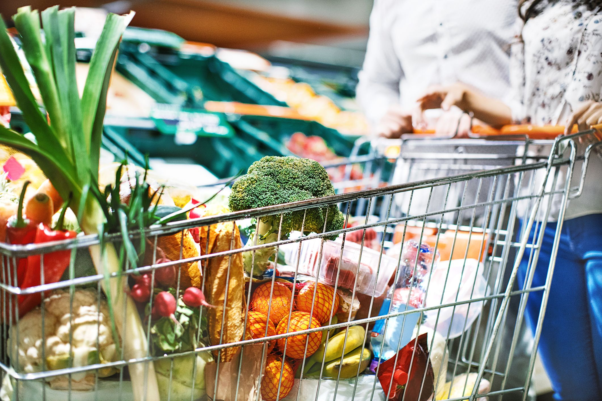
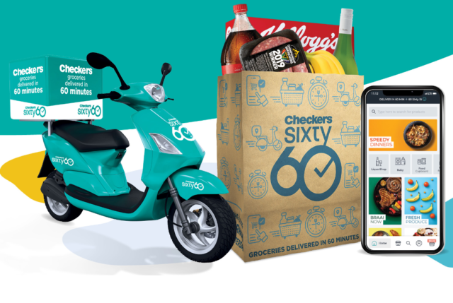

Better and better; this is what we strive for on behalf of the millions of customers who’ve made Checkers a household name since 1956. But what does it really mean to be “better and better”? Well, our track record for pushing boundaries can be traced back to the opening of our maiden store in Mayfair, Johannesburg. As it turned out, that first, humble 38 square meter outlet would become the incubator for many groundbreaking ideas for the then fledgling supermarket. Today, backed by the biggest food retail group in Africa, we’re able to tap into a wealth of resources that further fuel our innovative spirit and drive to be better and better. The Shoprite Checkers family’s collective mission is to bring products and services to market that delight in both quality and price, and we’re able to do that thanks to a shared commitment to our customers.
Our efforts in developing products, services and experiences that people love have made the Checkers brand relevant after almost a century of serving the Southern African market. From our much loved steakhouse classics, to our ever-expanding cellar of local and international wines, to our extensive range of award-winning cheeses: we’re proud to be the supermarket of choice for shoppers who enjoy the finer things. But it doesn’t stop there; we make sure every shopper enjoys value for their money by keeping the prices of basic commodities low. In fact, we’ve consistently gone beyond the retail status quo when our customers needed us. When bread prices spiraled out of control in 1990, for example, we immediately stepped in and subsidized the sale of every loaf of bread at our stores.
 